Ποια είναι τα μαθηματικά πίσω από τον υπολογισμό των συντεταγμένων της θέσης αντικειμένων, δηλαδή τεχνικών όπως αυτές που χρησιμοποιεί το GPS;
Το πρόβλημα υπολογισμού της θέσης πραγμάτων και προσώπων έχει απασχολήσει την ανθρωπότητα εδώ και εκατοντάδες χρόνια.
Από τους πρώτους θαλασσοπώρους και το πού βρίσκεται το καράβι τους στη μέση της θάλασσας, ώστε να ξέρουν προς ποια κατεύθυνση να στρέψουν τα πανιά, μέχρι και την εξερεύνηση του γαλαξία με διαστημικά μέσα όπως το Voyager.
Με ένα αρκετά κλασικό σύγχρονο παράδειγμα — που είδαμε σε προηγούμενο άρθρο — να είναι αυτό του GPS.
Το GPS, όπως και άλλες τεχνολογίες, χρησιμοποιεί ηλεκτρομαγνητικά σήματα για να υπολογίσει την θέση, και ένα από τα πρώτα προβλήματα που πρέπει να λύσει πριν επιτύχει την εκτίμηση της τοποθεσίας, είναι να υπολογίσει αποστάσεις μεταξύ συσκευών. Τεχνικές σχετικά με αυτό είχαμε δει παλιότερα σε αυτό το άρθρο.
Με βάση τις πληροφορίες που έχουμε συλλέξει, θα προσπαθήσουμε πλέον να εκτιμήσουμε την θέση ενός node. Στην συνέχεια θα περιγράψουμε μεθόδους οι οποίες μπορούν να χρησιμοποιηθούν για να το επιτύχουν αυτό. Κύρια διαφορά τους είναι η απόδοση που μπορεί να έχουν, η οποία όμως σχετίζεται με την αύξηση της πολυπλοκότητας στους υπολογισμούς που θα χρειαστούν, καθώς επίσης και ποιες από τις παραπάνω πληροφορίες θα εκμεταλλευτούν.
Για την εύρεση της θέσης ενός unknown node στο τρισδιάστατο χώρο \(R^3\), το Minimal Required number of Sensors (MRS) είναι τέσσερα nodes. Στις παρακάτω περιγραφές όμως, και χωρίς βλάβη της γενικότητας θα χρησιμοποιηθούν τρία για την απλούστευση της περιγραφής - με απώτερο σκοπό την εύκολη κατανόηση της, με την παραδοχή ότι μας ενδιαφέρει η δισδιάστατη ανάλυση \(R^2\).
🔴 Trilateration
Η συγκεκριμένη μέθοδος είναι ίσως η πιο απλή διαισθητικά, βασίζεται στην γεωμετρία κύκλων, είναι αυτή που η ιδέα της χρησιμοποιείται από τα GPS για τον υπολογισμό θέσης, ενώ αξιοποιεί μόνο πληροφορία απόστασης και όχι γωνίας.
Η εξίσωση ενός κύκλου από την γεωμετρία γνωρίζουμε ότι περιγράφεται από την παρακάτω εξίσωση όπου \((x_i,y_i)\) οι συντεταγμένες του κέντρο του κύκλου με ακτίνα \(r_i\).
$$ (x-x_i)^2 + (y-y_i)^2 = r_i^2 $$Εάν χρησιμοποιούμε omnidirectional κεραίες ή στην γενικότερη περίπτωση το μοντέλο της isotropic antenna και υπολογίσουμε την απόσταση ενός beacon από το node στο οποίο θέλουμε να υπολογίσουμε την θέση του - τότε μπορούμε να συμπεράνουμε ότι το free node είναι κάπου πάνω στην περιφέρεια ενός κύκλου, με κέντρο το beacon και ακτίνα την απόσταση μεταξύ του beacon και του free node. Επαναλαμβάνοντας αυτό για ακόμα δύο beacons, τελικά το free node στο δισδιάστατο επίπεδο \(R^2\) θα πρέπει να βρίσκεται στην τομή των τριών κύκλων, πράγμα που γραφικά απεικονίζεται στην παρακάτω εικόνα:
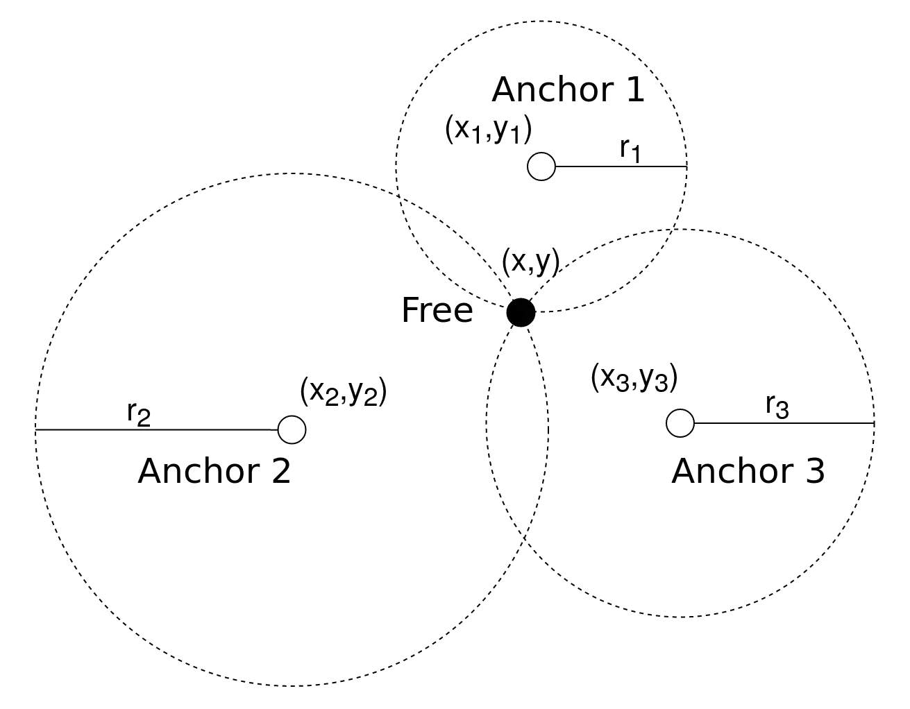
Οι ακόλουθες εξισώσεις περιγράφουν πλήρως τους κύκλους του κάθε node. 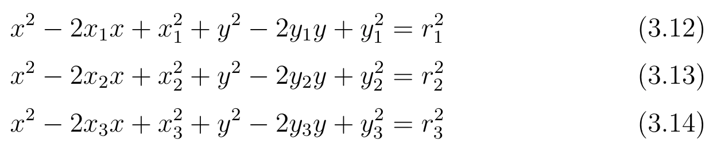
Όπου: - \((x_i,y_i)\) το κέντρο του κύκλου για κάθε beacon \(i=1,2,3\) - \(r_i\) η ακτίνα του κάθε beacon \(i=1,2,3\) - \((x,y)\) οι συντεταγμένες του free nodes τις οποίες και ψάχνουμε.
Ένας τρόπος να υπολογίσουμε τις συντεταγμένες αυτές είναι να αφαιρέσουμε από την (3.13) την (3.12) και όμοια από την (3.14) την (3.13) ώστε να καταλήξουμε στις παρακάτω δύο εξισώσεις.
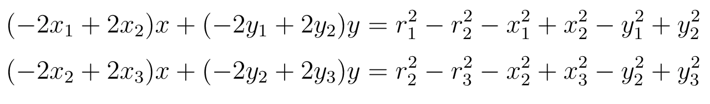
Ο λόγος που κάναμε το παραπάνω βήμα είναι διότι πλέον έχουμε ένα σύστημα με δύο εξισώσεις και δύο αγνώστους, οπότε μπορούμε εύκολα να θεωρήσουμε τους παρακάτω πίνακες.
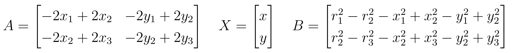
Με την χρήση των οποίων καταλήγουμε ότι έχουμε να λύσουμε το γραμμικό σύστημα πινάκων που περιγράφεται από την τελική εξίσωση παρακάτω για τον υπολογισμό των συντεταγμένων \((x,y)\) του free node οι οποίες μας ενδιαφέρουν.
$$ AX = B $$Σε γενικές γραμμές, ο υπολογισμός όμως των αποστάσεων μπορεί να περιλαμβάνει μια μικρή απόκλιση \(\widehat{r_i} = r_i - ε\), με το \(ε\) συχνά να θεωρείται μία ανεξάρτητη κανονική τυχαία μεταβλητή με μηδενικό μέσο. Αυτό σημαίνει ότι τότε οι κύκλοι δεν έχουν ένα κοινό σημείο τομής, αλλά το free node βρίσκεται κάπου μέσα στο χωρίο επικάλυψης των τριών κύκλων, σχηματικά αυτό παρουσιάζεται εδώ:
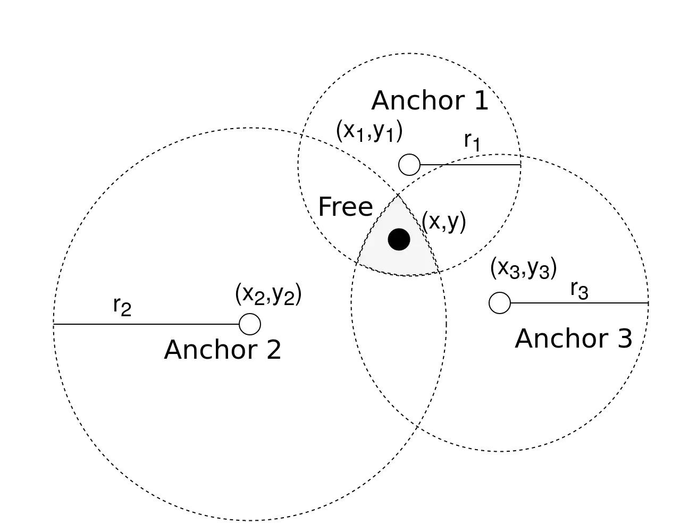
Σε αυτήν την περίπτωση καταλήγουμε σε ένα μη πεπερασμένο πλήθος λύσεων, με τη συνάρτηση του κάθε κύκλου να περιγράφεται από την εξίσωση:
$$ (x-x_i)^2 + (y-y_i)^2 = r_i^2-e $$Το αρνητικό με αυτήν την μέθοδο, είναι η ανάγκη πραγματοποίησης floating point operations για τον υπολογισμό των συντεταγμένων \((x,y)\) σε πραγματικές συνθήκες - όπου το πλήθος των οποίων εξαρτάται από τον τρόπο που θα επιλέξουμε να επιλύσουμε το σύστημα. Μία από τις μεθόδους επίλυσης της γραμμικής εξίσωσης είναι μέσω του least square method, όπου τότε το πλήθος των floating point operations που απαιτούνται είναι \((m+\frac{n}{3})\cdot n^2\), με \(m\) τον αριθμό των αγνώστων και \(n\) τον αριθμό των δοθέντων εξισώσεων.
🟥 Bounding Box
Σε αυτήν την μέθοδο χρησιμοποιούνται τετράγωνα αντί για κύκλους του Trilateration, ενώ και εδώ θεωρούμε \((x_i,y_i)\) τις συντεταγμένες των beacon και \(d_i\) η απόσταση που έχουμε υπολογίσει από το free node - για κάθε beacon \(i\).
Όμως σε αυτή την προσέγγιση δημιουργούμε τετράγωνα μήκος πλευράς \(2d_i\) με κέντρο το κέντρο του beacon και συντεταγμένες \((x_i - d_i, y_i - d_i)\) & \((x_i + d_i, y_i + d_i)\).
Θετικό πλέον είναι ότι δεν χρειάζεται να κάνουμε floating point operations για τον υπολογισμό του χωρίου τομής - αλλά μπορούμε να το υπολογίσουμε με απλή γεωμετρία. Αφού έχουμε υπολογίσει το χωρίο τομής των τετραγώνων μπορούμε να θεωρήσουμε ότι στο κέντρο του βρίσκεται το free node.
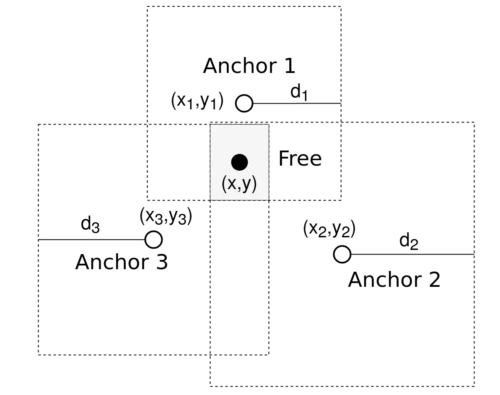
Η συγκεκριμένη μέθοδος μπορεί να είναι ευκολότερη υπολογιστικά και να απαιτεί λιγότερα processor resources από το Trilateration, όμως ταυτόχρονα προκύπτει και μεγαλύτερο σφάλμα απόκλισης.
🔺 Triangulation
Σε αντίθεση με τις παραπάνω μεθόδους, η τεχνική Triangulation εκτιμάει την θέση του node που μας ενδιαφέρει, χρησιμοποιώντας γνώση που έχουμε για γωνίες και όχι εκτίμηση της απόστασης. Ένα απλούστερο παράδειγμα παρουσιάζεται εδώ:
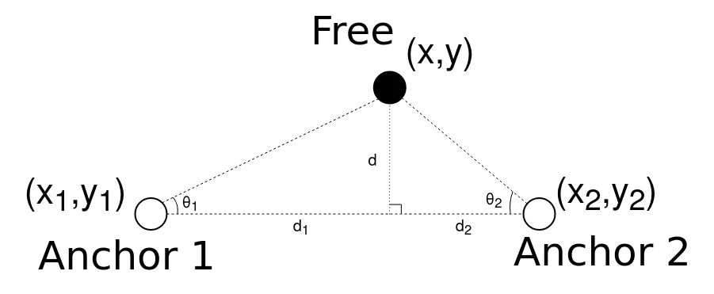
Όπου σε αυτό το παράδειγμα από την τριγωνομετρία, μπορούμε εύκολα να συμπεράνουμε ότι για τις γωνίες \(\theta_1\) και \(\theta_2\) ισχύουν οι σχέσεις:
$$ \theta_1 = \frac{d}{d_1} = tan^{-1}\left(\frac{y_1-y}{x_1-x}\right) $$$$ \theta_2 = \frac{d}{d_2} = tan^{-1}\left(\frac{y_2-y}{x_2-x}\right) $$Από τις σχέσεις αυτές μπορούμε να καταλήξουμε στις παρακάτω δύο σχέσεις, μέσω των οποίων τελικά για δεδομένες θέσεις των beacon - γνωστά δηλαδή τα \((x_i,y_i)\) για κάθε beacon i - και με βάση την μέτρηση των γωνιών \(\theta_1\) και \(\theta_2\), να είμαστε σε θέση να υπολογίσουμε την θέση του free node \((x,y)\).
$$ x = \frac{y_2 - y_1- x_2\tan \theta_2 + x_1\tan \theta_1}{\tan \theta_1 - \tan \theta_2} $$$$ y = x\tan \theta_1 + y_1 - x_1\tan \theta_1 $$$$ y = x\tan \theta_2 + y_2 - x_2\tan \theta_2 $$Δεν είναι κάπως μαγικό; Πώς όλα αυτά μπορούν να συνδυαστούν; Από τη μέτρηση γωνιών που κάνουμε σε κεραίες, τελικά, μπορούμε να υπολογίσουμε την θέση ενός άγνωστου αντικειμένου στον χώρο.
Αυτή η τεχνική εκτίμησης της θέσης του node, μπορεί να γίνει είτε από τοπικές μετρήσεις του ίδιου του node. 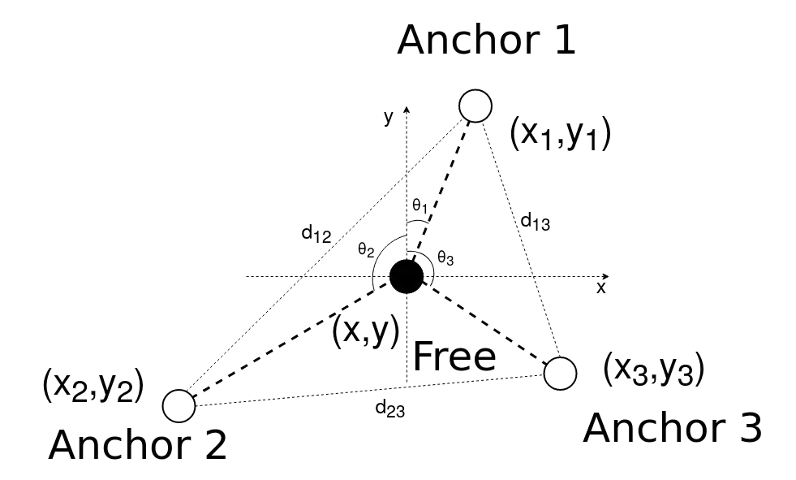
Είτε από μετρήσεις γωνιών που κάνουν τα anchors. 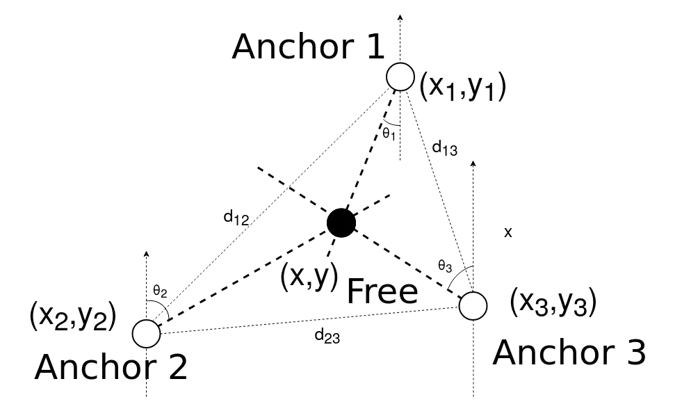
Φυσικά σε μία πραγματική εφαρμογή, όπως έχει αναφερθεί παραπάνω, οι μετρήσεις παρουσιάζουν αποκλίσεις από τα ιδανικά μοντέλα. Συνεπώς σε πιο ρεαλιστικά επίπεδα - συνυπολογίζοντας την ύπαρξη των αποκλίσεων - το χωρίο στο οποίο με μεγαλύτερη πιθανότητα βρίσκεται το node παρουσιάζεται στο εξής παράδειγμα. 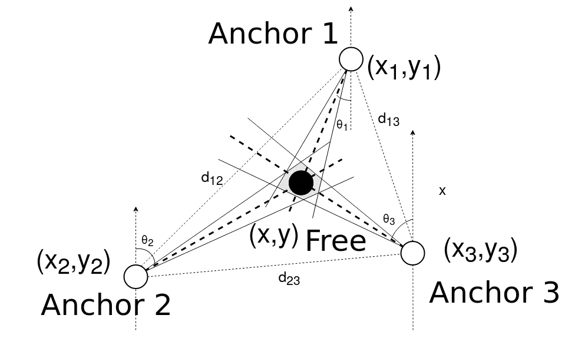
🎯 Multilateration
Η μέθοδος του Multilateration (MLAΤ) (κάποιες φορές ο όρος αυτός χρησιμοποιείται επίσης σε αναφορά της χρήσης του Trilateration ή του Triangulation με πάνω από 3 beacons) έχει ως βάση την γεωμετρία των υπερβολικών καμπύλων και συχνά μπορεί να βρεθεί επίσης και ως hyperbolic positioning την βιβλιογραφία.
Σε προηγούμενο άρθρο έγινε αναφορά ότι η χρήση του TDoA βασίζεται στις υπερβολικές καμπύλες, συνεπώς μπορούμε εύκολα να χρησιμοποιήσουμε τις μετρήσεις αυτές για τον υπολογισμό της θέσης του free node.
Η γενική ιδέα σε αυτήν την περίπτωση περιγράφεται στην παρακάτω εξίσωση - και αυτό που θέλουμε, είναι να υπολογίσουμε την θέση του \(k_t\) (free node) γνωρίζοντας για κάθε δύο διαφορετικά \(k_i\) και \(k_j\) beacon nodes την χρονική στιγμή \(t_i\) και \(t_j\) που έφτασε το σήμα στο καθένα - εάν αυτό κινούταν με ταχύτητα s και το ‖·‖ συμβολίζει την ευκλείδεια απόσταση μεταξύ τους.
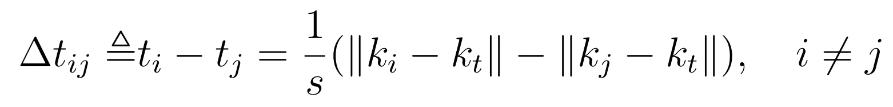
Αυτό που αναπαριστά ουσιαστικά η σχέση αυτή δεν είναι τίποτα άλλο από την προσπάθεια εύρεσης του σημείου τομής των καμπύλων.
Για να το καταλάβουμε καλύτερα, ας δούμε αυτό το παράδειγμα.
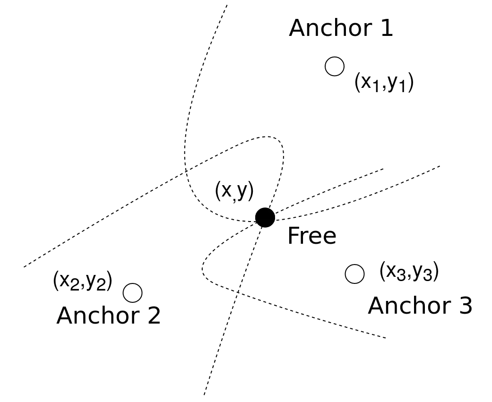
🎲 Πιθανοκρατικοί μέθοδοι
Το γεγονός ότι οι μετρήσεις απόστασης και γωνίας σε πραγματικές συνθήκες εμπεριέχουν σφάλματα, έχει ωθήσει στην έρευνα probabilistic μεθόδων εκτίμησης τοποθεσίας των free nodes.
Αυτού του τύπου οι προσεγγίσεις λαμβάνουν υπόψιν τα μετρικά σφάλματα και συχνά τα μοντελοποιούν ως κανονικές τυχαίες μεταβλητές. Το μεγάλο μειονέκτημα σε αυτήν την μέθοδο είναι τα μεγάλα υπολογιστικά και χωρικά - για την αποθήκευση των δεδομένων - κόστη.
💭 Σύνοψη
Ας συνοψίσουμε τι είδαμε σε αυτό το άρθρο και ας συνδυάσουμε ταυτόχρονα και προηγούμενη γνώση, χρησιμοποιώντας τον παρακάτω πίνακα:
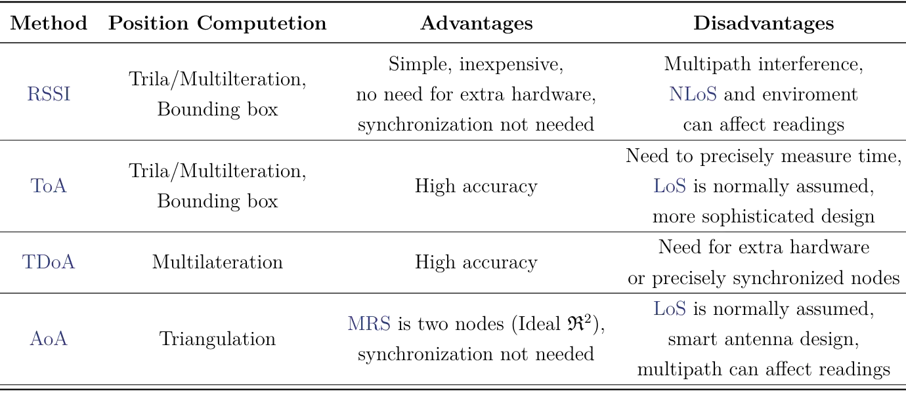
Όπως είδαμε σε προηγούμενο άρθρο, πριν χρησιμοποιήσουμε κάποιον από τους αλγόριθμους που είδαμε σήμερα, είναι σημαντικό να έχουμε υπολογίσει τις αποστάσεις ή τις γωνίες μεταξύ των σημείων αναφοράς του συστήματός μας.
Κάποια σημεία είναι σημαντικό να ξέρουμε πού βρίσκονται, και με τις μετρήσεις—ακολουθώντας συγκεκριμένους αλγόριθμους—μπορούμε στη συνέχεια να εκτιμήσουμε την θέση άγνωστων αντικειμένων.
Αν μας ενδιαφέρει να βρούμε, μέσω κάμερας, την θέση των αντικειμένων στο τρισδιάστατο επίπεδο, μπορούμε να συνεχίσουμε την ανάγνωση μας σε αυτό το άρθρο.
Ενώ, αν θέλουμε να εμβαθύνουμε περισσότερο σε λεπτομέρειες σχετικά με τους αλγόριθμους που σχετίζονται με το localization, μπορούμε να διαβάσουμε αυτό.
🔗 Παραπομπές
- [1] Christos Spyridakis, “Design and implementation of a low cost embedded system for localization of drones flying in swarms”, Diploma Work, School of Electrical and Computer Engineering, Technical University of Crete, Chania, Greece, 2022 https://doi.org/10.26233/heallink.tuc.91531
- [2] Omnidirectional antenna. [Online]. Available: https://en.wikipedia.org/wiki/Omnidirectional_antenna (visited on 12/2020).
- [3] Isotropic radiator. [Online]. Available: https://en.wikipedia.org/wiki/Isotropic_radiator (visited on 12/2020).
- [4] Rssi-based accurate indoor localization scheme for wireless sensor networks, Nov. 2015. [Online]. Available: https://www.youtube.com/watch?v=CWvRJdF7oVE (visited on 12/2020).
- [5] J. Wedding, Find x location using 3 known (x,y) location using trilateration, Jul. 2017. [Online]. Available: https://math.stackexchange.com/questions/884807/find-x-location-using-3-known-x-y-location-using-trilateration (visited on 12/2020).
- [6] Hybrid localization algorithm for wireless sensor networks, Oct. 2015. [On-line]. Available: https://www.youtube.com/watch?v=kf-hXqZHkAA (visited on 12/2020).
- [7] Multilateration. [Online]. Available: https://www.radartutorial.eu/02.basics/rp52.en.html (visited on 01/2022).
- [8] Multilateration. [Online]. Available: https://en.wikipedia.org/wiki/Multilateration (visited on 12/2020).